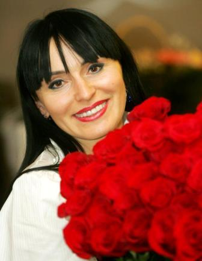

2012. gada februāris
Es biju jaunākā ķirurģe visā Kaukāzā, 22 gadu vecumā strādāju Groznijas slimnīcā, ātrajā palīdzībā.Tā bija vīriešu pasaule, bet tajā atradu savu īsto vietu. Man ļoti patika šī ekstrēmā sajūta, darbs, kas liek dzīvot kā nospriegotai stīgai. Tas piesaista asu izjūtu cienītājus, bet es biju tikai jauna, tikko institūtu beigusi studente...Kā tā sanāca? Pavisam vienkārši. Augu Groznijā, un mūsu pagalmā bija daudz bērnu. Man bija pieci gadi, kad septembrī pārējie pēkšņi pazuda. Izrādījās – visiem ir jau septiņi gadi, un sākusies skola. Es tā nebiju ar mieru, pierunāju vecākus arī mani aizvest uz skolu. Viņi «po Kavkazskomu blatu» tā arī izdarīja, domāja – man apniks, neizturēšu. Tā es bez dokumentiem sēdēju skolā, neko nesapratu, bet paliku. Līdz trešajai klasei bija grūti, taču spītība lika cīnīties. No ceturtās biju teicamniece – nolēmu nebūt dumja, un izdevās. Ne tāpēc, ka būtu brīnumbērns, drīzāk vēlējos sevi pierādīt. Biju vienīgā meita ģimenē, vecāki bija diezgan turīgi, taču nekādu privātskolotāju man nebija. Jau 15 gados man bija atestāts un vēlme iestāties Vladikaukāza Medicīnas institūtā – tā bija ļoti prestiža mācību iestāde, slavena visā Padomju Savienībā. Ja gribēji tikt pa blatu, iestāšanās maksa bija GAZ 24 jeb volga, taču es ar savu spīdošo atestātu iestājos bez kukuļiem. Visa ģimene ar mani lepojās! Kad sākās specializācija, labākie studenti drīkstēja izvēlēties pirmie. Ķirurģija bija visprestižākā, taču sievietes tur negribēja laist. Kā tagad atceros: stāvu dekāna kabinetā, vicinu savu izcilo atzīmju grāmatiņu un pieprasu savu vietu – būt par ķirurģi! Kā man var to liegt?
Margarita taču aizlidoja!
Tagad redzu, cik toreiz biju naiva.Aktīva, dedzīga, aizrautīga, bet ārpus savas idilliskās ģimenes visai maz pazinu dzīves realitāti. Visapkārt redzēju tikai labo! Biju kā spontāns, radošs, aizrautīgs bērns, kurš nonācis pieaugušo pasaulē. Tolaik skatījos uz pasniedzējiem,kam bija 40, 50 gadi, un nesapratu – ko tik veci cilvēki vēl dara medicīnā? Man bija absolūts jaunības maksimālisms, taču tas nebija pragmatisks, drīzāk idillisks un romantisks. Kopmītņu dzīvi joprojām atceros ar nostalģisku mīļumu. Mēs bijām un joprojām esam trīs draudzenes uz mūžu. Gan Leila, gan Madina bija vecākas par mani, rūpējās un pieskatīja, izdzenāja pielūdzējus. Mana mamma lika viņām uzraudzīt, lai man ziemā ir siltā apakšveļa – mammu varēju piemānīt, bet draudzenes nekad. Kopmītņu likums bija – viss ir kopīgs. Tas nozīmēja – kura pirmā pieceļas, tā vislabāk apģērbjas! Es gandrīz vienmēr biju pirmā... Arī nauda bija kopīga, stipendijas nebija lielas. Es, kā jau jaunākā, varēju rīkoties visneapdomīgāk – piemēram, par visu nedēļas budžetu nopirkt kādu skaistu statueti... Bet draudzenes nekad nepārmeta. Mēs vispār ignorējām šo sadzīvisko dimensiju.Lasījām Freidu, Jungu, slepus kopējām Nīči, Rērihu, Blavatsku, meklējām Šambalu, jūsmojām par Bulgakovu. Mums vienmēr bija sarunas par vērtībām, par ko augstāku, par garīgām, vispārcilvēciskām kategorijām.
Draudzenes bija ingušietes, mēs joprojām esam saglabājušas šo garīgo kopību, kaut dzīvojam tālu viena no otras.Vēl tagad varam stundām ilgi runāties, saprotam viena otru no pusvārda. Tā ir patiesa draudzība, ko pārbaudījis laiks, mums tiešām otras sāpes kļuva par savējām, un prieki arī. Mēs varējām pusnaktī iesēsties taksī un braukt nezināmā virzienā, ja kāda no mums pēkšņi bija atcerējusies: «Redzēju tieši tādu balkonu, no kura aizlidoja Margarita!» Kaukāzā, ar mūsu stingrajām tradīcijām, tas bija kas neiedomājams. Bet mūsu romantiskā jūsma izslēdza saprātu, mums visas vēlmes vajadzēja īstenot uzreiz. Un mēs bijām gatavas lidot no tā balkoniņa, mums likās, ka tiešām ir izauguši spārni! Un kādas mums bija dzimšanas dienas! Jubilārs nedrīkstēja darīt neko, viņa pienākums bija tikai priecāties un labi izskatīties. Man savā dzimšanas dienā starp lekcijām bija jāieskrien kopmītnēs, bet tur – meitenes no visām istabiņām aizņēmušās vāzes un visās saliktas rozes! Desmitiem skaistu, smaržīgu rožu! Leila bija jau precējusies, varēja atļauties tādu izšķērdību. Tās rozes gan ļoti ātri novīta, taču tad meitenes pielika zīmīti – «rozes novīta, jo neizturēja salīdzinājumu ar tevi». Tie ir tik skaisti mirkļi, kas silda un iedvesmo aizvien. Jā, Kaukāza sievietes ir bīstamas, jo ir stipras un neatkarīgas savā prātā. Ja viņām ir motīvs, skaista vēlēšanās, tad var aizlidot. Margarita taču aizlidoja!
Dzimtas asinis
Es nāku no senas, cienījamas dzimtas, no bērnības zināju, ka esmu «blagorodnaja ». Tas nav kā tituls, kādas privilēģijas vai īpašs statuss, nē, taču tas ir ļoti, ļoti nozīmīgi. Čečeniem dzimtas gods ir augstāk par visu. Tā ir pieredze,cilvēciskais kapitāls, kas uzkrāts neskaitāmās paaudzēs. Šādās dzimtās bērni jau piedzimst ar pašapziņu un pārliecību par sevi. Aiz viņiem ir gadsimtu tradīcijas – vīrieši, kas aizstāv dzimtu, un sievietes, kas to nav aptraipījušas. Tā vienlaikus ir ne ar ko nesalīdzināma drošības un pasargātības sajūta, taču reizē arī milzīgs atbildības slogs. Tu neesi tikai indivīds, tu esi daļa no dzimtas, no šīs gadsimtiem uzkrātās vērtības. Tādēļ nedrīksti izdarīt neko apkaunojošu. Tev jākontrolē katrs vārds, darbība, pat domas, lai neko apkaunojošu. Tev jākontrolē katrs vārds, darbība, pat domas, lai vienmēr izturētos cienīgi, lai neaptraipītu dzimtas godu. Tā to ir veidojusi paaudzēm, un tev jāsaprot, ka esi tikai puteklītis gadsimtu kontekstā, kas nedrīkst sabojāt iepriekš paveikto. Ignorēt šo paaudžu saikni nav iespējams, tā ir asinīs, tā ir mūsu, čečenu, būtība. Ja cilvēks atbild tikai par sevi, viņš izkāpj no šīs pagātnes mantojuma upes. Bet individuālisms rada problēmas, daudz nelaimīgu cilvēku. Ir grūti mētāties pasaulē bez saknēm, bez piederības. Tad ir jābūt ļoti stipram cilvēkam. Pasaule ļoti mainās, viss notiek ar gaismas ātrumu, tāpēc ir daudz jāmācās un jāseko līdzi. Bet zināšanas nerodas tukšā vietā, tā ir paaudžu pieredze. Mana vecmāmiņa bija dziedniece. Kā apzinīga padomju studente es viņu savulaik uzskatīju par nedaudz dīvainu, bet tagad novērtēju šo rituālu un metožu psiholoģisko augstvērtību. Senais dod mums gudrību, tikai jāmāk to paņemt.
Kur sarunājas dvēseles
Padomju laikā psiholoģija nebija modē. Stereotips – ķirurģija ir visai tāla no psiholoģijas, jo tā ir ļoti «reāla ». Bet tieši caur ķirurģiju es nonācu pie psiholoģijas. Darbs ātrajā palīdzībā bija ļoti saspringts. Dežūrējām 24 stundas, bieži bija vairākas neatliekamas operācijas vienā maiņā. Autoavārijas, kautiņi, nažu dūrieni, šautas brūces, sadzīves nelaimes... Ap mani bija vīriešu kolektīvs, kolēģi, ko ļoti apbrīnoju. Dzīvojām kā uz naža asmens, mums patika šis adrenalīns,patika glābt cilvēkus. Ķirurģija, darbs ekstrēmos apstākļos mani apbūra. Veicām operācijas, kam cilvēki nebija gatavi, tāpēc nācās saskarties ar plašu emociju gammu. Kad operējam, uz galda tiek ievadīta narkoze, viņš nezina, vai ārsts nav pēdējais cilvēks, ko viņš redz šajā dzīvē. Šajos skatienos koncentrējās viss – šausmas, apskaidrība,lūgums, neizpratne, dzīvotgriba, bailes, ka kaut kas nav pateikts līdz galam, nav piedots, izdarīts, noskaidrots...Es sapratu, cik šie skatieni ir koncentrēti un eksistenciāli būtiski. Biju nepieredzējusi, bet izjutu milzīgu psiholoģisko atbildību. Jā, tā bija kā atkarība – būt lieciniekam, būt starpniekam starp dzīvi un nāvi, būt vietā, kur sarunājas dvēseles. Tas bija intensīvs, spriedzes pilns darbs, bet mēs dzīvojām «dziļumā». Ikdienā neviens tā nedzīvo, bet kritiskās situācijās sīkumi izzūd un paliek tikai būtiskais. Caur mūsu rokām gāja cilvēku likteņi. Katrs cilvēks mācīja arī mūs. Un tā bija arī romantika, lai cik neiederīgi tas varbūt izklausītos. Mani šis darbs iedvesmoja. Bija reizes, kad paveicām neiespējamo. Slavenākā bija Vartanova brigāde. Mūsu maiņa jau bija gandrīz beigusies, kad atveda īpaši smagu slimnieku ar daudzām šautām brūcēm. Viņu glābt šķita bezcerīgi. Ievainotā brālim bija pateikts – vienīgā cerība, ja strādā Vartanovs. Viņam bija ap 40, man tas šķita jau ļoti cienījams vecums. Viņš uztaisīja kafiju, tik biezu kā putra, un ķērās pie darba. Operēja astoņas stundas, strādāja kā apsēsts. Un brīnums notika. Tieši šādā vidē un situācijās cilvēks apjēdz lielās, būtiskās lietas. Drīz sapratu, cik milzīgs spēks ir vārdam un cilvēka apziņai. Jutu, ka ķirurģija ir jāpapildina ar psiholoģiju: ir taču skaidrs, ka dvēsele un miesa pastāv kopībā – tad kā gan tās var ārstēt atsevišķi? Jautājumu bija daudz, un es gribēju mācīties vēl.
Viņš izdarīja tieši to, ko vēlējos
Jaunības maksimālismā domāju – ja man arī būs ģimene, tad tikai kā piedeva ķirurģes karjerai. Arī studiju biedrenes smejas – cik labi, ka mēs tavus pielūdzējus izdzenājām, citādi vēl būtu apprecējusies ar kādu idiotu, nebūtu sagaidījusi Bislanu... Patiesībā viņš gaidīja mani. Ļoti mērķtiecīgi un neatlaidīgi. Sēdēja slimnieku rindā, gaidot, kad man beigsies dežūra, lai pajautātu – kad precēsimies? Nevis – vai, bet – kad? Kā īstam kaukāzietim viņam par manu roku bija jācīnās, un to viņš darīja ļoti pārliecināti. Viņš bija pilnīgi drošs par pozitīvu iznākumu, bet es tikai smējos. Nekādas īpašas cerības viņam nebiju devusi. Man vispirms vajadzēja viņu novērtēt, saprast viņa cilvēciskās kvalitātes. Mūs satuvināja nejaušs gadījums, kad redzēju viņa rīcību no malas. Viņš bija atbraucis pie manis uz Vladikaukāzu un devās atpakaļ. Bet autoostā gadījās kāds incidents – tur ālējās piedzēries čečens, kas ir ļoti reta un apkaunojoša rīcība ne vien šim cilvēkam, bet dzimtai, visai tautai, tāpēc citi viņu par to publiski iekaustīja. Tā bija duāla situācija, jo dzērājs, protams, uzvedās necienīgi. Bet man bija viņa arī žēl, es jutu līdzi. Un tad Bislans izdarīja tieši to, ko es vēlējos. Viņš izdzenāja pūli, savāca dzērāju, iesēdināja viņu taksī un samaksāja, lai aizved mājās. Tas bija cilvēcīgi un taisnīgi, atklāja viņa iekšējo būtību, un es sāku viņu cienīt. Tiesa, viņam par manu roku vēl vajadzēja pacīnīties! Taču viņš to darīja tik mērķtiecīgi, izmantojot arī netradicionālas metodes, ka es beidzu smieties un piekritu. Arī mūsu dzimtas izvēli apstiprināja.
Bislana lielā pašpārliecinātība, kas mani sākotnēji smīdināja, vēlāk izraisīja apbrīnu. Sapratu, ka viņš dzīvē sasniegs visus savus mērķus. Neesmu kļūdījusies un ar savu vīru lepojos joprojām – viņš prot rīkoties ātri un noteikti, iedvesmojot arī citus. Viņš ir labs līderis ar izteiktu iekšējo taisnīguma izjūtu, ko es dziļi cienu. Man ir pieci bērni, un to uztveru kā dzīves dotu iespēju, ko esmu izmantojusi. Man kopš bērnības bijusi ļoti svarīga pašizpausme, taču bērni tai nav traucējuši. Es pat nesaku cilvēkiem, ka man viņu ir pieci, jo dažiem tas liekas tik daudz... Bet ne jau skaitam ir nozīme. Bērni ir kā atsevišķs kosmoss, kas tevi māca. Un no viņiem var tik daudz mācīties! Viņi visi ir dzimuši un uzauguši Latvijā, šīs ir viņu mājas.
Kritiskais prāts par asins cenu
Kad dzimtenē sākās karš, Bislanam bija darba darīšanas Latvijā. Biju atbraukusi viņam līdzi, un mēs palikām. Tas bija netīrs karš, un mūsu atgriešanās neko nemainītu. Taču šis karš mums bija personiska traģēdija. Es zaudēju savu karsti mīļoto tēvu, citus radiniekus, daudzi mani kolēģi tika nogalināti. Zaudēju arī savas bērnības pilsētu. Mēs nevaram aiziet uz skolas salidojumu, es nevaru parādīt, kur gāju uz pirmo randiņu, kur bija teātris, cirks. Mana skaistā bērnības zemeir izpostīta, tauta ir ļoti cietusi. Arī tad, ja pati esi pasargāta, sajūta, ka tiek iznīcināta tava tauta, ir briesmīga. Mēs saņēmām skaudru mācību par ļoti dārgu cenu. Redzējām, kā melo masu mediji, cik ļoti tiek izkropļota patiesība, cik ciniski tiek manipulēts ar mūsu prātiem. Ja Groznijā notiek uzbrukums tirgum un tiek apšauti mierīgie iedzīvotāji – sievietes, sirmgalvji, bērni –, bet pēc tam tiek ziņots par veiksmīgu pretterorisma operāciju pret bruņotiem bandītiem, tu vairs netici nekam. Es joprojām neticu ziņām un analizēju –kas un kāpēc grib, lai es tā domātu? Bet šī kritiskā saprāta cena bija ļoti dārga –tā bija tiešā nozīmē asiņu cena. Esmu čečeniete un ar to lepojos, taču no agras bērnības esmu jutusies kā pasaules pilsone. Es neskatos uz cilvēku nacionalitāti, bet – vai mums ir pa ceļam vai ne, vai saderam domāšanā. Jo cilvēks vairāk ciena savu kultūru, jo vairāk cienīs citu. Latvijā nejūtos sveša, man ir dabiski lepoties ar Latvijas kultūru, ar izciliem māksliniekiem, ar šīs zemes vērtībām. Jau Fromms rakstīja par incesta līmeņa pieķeršanos savai tautai, kas liecina par infantilu attieksmi, par neattīstītu apziņu, kad šķiet – tikai mēs, šīs nacionalitātes pārstāvji, esam gudrākie, labākie, cienīgākie... Nē, man šādas pieķeršanās nav.
Laime nav telpā
Cilvēks savu laimi neatrod telpā, bet tur, kur ir viņa apziņa, viņa dvēsele.Pašlaik visā pasaulē ir garīgo vērtību krīze, kas ir daudz smagāka par finanšu problēmām. Liela daļa cilvēku ir pazaudējuši jebkādu motivāciju. Cilvēki jūk prātā no sīkumiem un neredz lielās lietas. Un šī pamatvērtību krīze vienlīdz smaga ir gan bagātam, gan nabagam. Zinu daudzus turīgus, karjerā veiksmīgus cilvēkus, kas jūtas nelaimīgi. Sievietes it kā sevi piepilda ar bērniem, vīrieši – ar sociālo statusu, bet tā visa slēpšanās, ja cilvēks nerealizē tieši sevi, savu sūtību. Visgrūtāk ir, kad personiskā krīze sakrīt ar sabiedrības krīzi. Šobrīd sabiedrība kopumā ir kļuvusi garīgi vājāka, Eiropa zaudē vecās tradīcijas un jaunas nav radījusi. Apkārtējā pasaule kļuvusi tik bezdvēseliska, ka neizbēgami rada ciešanas. Tāpēc cilvēks vērtības var atrast tikai pats sevī.
Cilvēki ir apjukuši jēgas meklējumos, mētājas no vienas reliģijas otrā, spēlējas ar vērtībām, līdz tās kļūst par tukšu skaņu...Mūsdienu traģēdija ir tā, ka no katras Dieva dzirksts mēģina uztaisīt konfekti - konfekti – viss ir jāpārdod! Tā degradējas pat māksla: kolīdz parādās kas īsts,to uzreiz mēģina iepakot. No katrām skumjām, no tieksmes pēc patiesības, no dvēseles trīsām kāds mēģinās uztaisīt preci. Tā ir sistēma! Tai var pretoties vienīgi ar iekšējām vērtībām, kas ir tieši un tikai tavējās. Tāpēc tās ir jāmeklē,ir jāatrod iekšējā drosme – neviens cits laimi uz paplātes nepasniegs.
Nebija kleitu, bet bija sirdis
Padomju Savienībā, par spīti visām nejēdzībām, bija pamatvērtības. Bija ārēja nebrīvība, spiediens no augšas, dažādi ierobežojumi, bet cilvēki atrada savu iekšējo brīvību. Kad sistēma sabruka, mums likās – esam atpalikuši ne tikai ekonomiski, bet arī dvēseliski. Taču tie bija maldi! Mums bija daudz augstākas vērtībassavstarpējās attiecībās, tieksme pēc cildenā. Mēs jutāmies nepilnvērtīgi, jo mums bija nesmukas drēbes, sliktas mašīnas un tukši veikali…Rietumi mūs apžilbināja, mēs tiem pavēram milzīgu teritoriju, kur ieplūdināt savu ideoloģiju, preces un materiālisma filosofiju. Domāju, ja nebūtu bijis šīs postpadomju teritotijas, “civilizētā pasaule” jau agrāk būtu nonākusi dvēseles un ekonomiskajā krīzē. Mēs šo laiku nedaudz attālinājām.
Rietumi vēl cenšas pierādīt, ka ir spēcīgi un neuzvarami, bet krīze ir acīm redzama. Mēs pārņēmām viņu mirstošo patērētājsabiedrības filosofiju, paši uzkrāvām sev šo materiālisma nastu. Un, iespējams, ciešam vēl smagāk, jo mums ir iekšējais konflikts – mums ir citas pamatvērtības. Sirdis pieprasa jēgu, pieprasa cildeno un viļas,ja to neatrod. Mēs ne ar ko nebijām sliktāki vai kādā veidā nepilnvērtīgi – tas ir komplekss, kas jāaizmirst. Un mums jāatgūst savas vērtības. Sāpīgi, ka Latvijā cilvēki šobrīd jūtas sliktāk nekā daudz grūtākos laikos. Ir pārciesti kari, deportācijas, padomju režīms, bet cilvēki atzīst – tauta bija cēlāka, kļuva stipra garīgi. Šobrīd ir pretrunīga situācija, jo ārēju ienaidnieku nav, bet ir saplosītas dvēseles. Nav idejas. Tāpēc mani uzrunā cilvēki, kuriem ir virziens, iekšējais kompass.
Katrā notikumā ir Dieva dzirksts
Taču dzīve nav un nedrīkst būt drūma, jo pasaulē ir neizsmeļama pozitīvo resursu krātuve. Lai tos izmantotu, jāstrādā ar savu apziņu. Kas meklēs, atradīs! Visu atradīs –pamatvērtības, domubiedrus, gandarījumu. Katrs pārbaudījums nes arī pozitīvo: uzdod jautājumus un like meklēt atbildes. Ko mēs varam darīt? Meklēt vienotību – kaut ar savu ģimeni. Meklēt cilvēkus, ar kuriem kopā ir interesanti, kuri bagātina garīgi. Darīt darbu, kas patīk. Mācīties novērtēt ceļā satiktos cilvēkus. Ko šis cilvēks man māca? Kāpēc manā dzīvē ir šāda situācija? Ko Dievs man grib pavēstīt? Katrā cilvēkā, katrā notikumā ir Dieva dzirksts, tikai jāmāk to saskatīt. Es necenšos savus klientus padarīt par pacientiem, bet risinu dialogu ar viņiem, dalos savos iekšējos meklējumos, runāju, cenšos iedvesmot, pierādīt, ka nekādās bēdās nedrīkst noslēgties sevī. Labi cilvēki nestaigā apkārt ar karogiem, bet viņi ir! Mēs tik bieži dzīvojam ar dažādiem minējumiem par citiem, bet neveidojam kontaktus – tā ir liela kļūda. Mīlēt un radīt – nekā svarīgāka taču šajā dzīvē nav! Tas ir kā veidot mandalu no smiltīm. Ir ļoti jākoncentrējas, jāpieliek pūles, garīgā enerģija, kaut rezultātu var aizpūst vienā mirklī. Bet šajā radīšanā ir dziļa jēga – dialogā, sarunās ar sevi un citiem. Mēs tāpat neuzzināsim galīgo atbildi uz jautājumu, kāpēc esam šajā pasaulē. To zina tikai Dievs. Bet viss, kur paši ieliekam jēgu, kļūst nozīmīgs, arī šķietami sīkumi.
Kad Mansurs, mans lielais dēls, devās studēt uz ārzemēm, mazā māsa viņam lidostā iedeva paštaisītu kartīti. Tur bija rakstīts, lai viņš neskumst, ka viņa brāli mīl un gaida atpakaļ. Kartiņa bija izrotāta ar birstošiem zeltītiem spīdumiņiem, kas Mansuram vēlāk izbira pa visu somu. It kā sīkums, bet no šādiem maziem pozitīviem sīkumiem veidojas lielās lietas. Un arī visas drāmas un sliktās atmiņas vajag uztvert kā dārgakmeni. Jo visa mūsu esība ir liels dimants, un pieredze mūs slīpē. Viss liekais, traucējošais jāmet prom. Masa tiek zaudēta, bet vērtība pieaug.
Labāk tiekamies koncertā!
Es visu laiku mācos, nevaru apstāties. Tagad mana galvenā specializācija ir mugurkauls un muguras problēmas. Ja velkam psiholoģiskās paralēles –daudziem arī dzīvē nav mugurkaula, nav savas pozīcijas, nav drošības. Bet mugurkauls ir visa pamats! Es cenšos novērst ķirurģisko iejaukšanos. Tas ir mans lielākais gandarījums – ja var iztikt bez operācijas. Protams, arī pacientam ir jādarbojas līdzi, jāstrādā ar savu apziņu. Es katram meklēju individuālu pieeju, kombinēju dažādas ārstnieciskas metodes. Latvijā esmu satikusi brīnišķīgu skolotāju, Juri Jankovski, kurš jau padomju laikos bija izgudrojis unikālu ārstniecības metodi – osteorefleksoterapiju, ārstēja olimpiešus. Pie viņa mācījos gan medicīnu, gan dzīves gudrību – viņam tagad ir pāri 90, bet viņš vēl spēlē tenisu un nodarbojas ar mūziku! Otrs mans lielākais skolotājs ir profesors Vladimirs Beresņevs no Ukrainas, viņam ir citas unikālas metodes. Es tās apvienoju un cenšos «atdot cilvēkiem mugurkaulu» – visās nozīmēs. Mani priecē, ja pacients neatgriežas. Tā arī saku – labāk tiekamies kādā koncertā! Es ļoti mīlu latviešu mūziku, lepojos ar Latvijas pianistiem, operdziedātājiem un koru tradīcijām. Visi mani bērni apmeklē mūzikas skolu. Mūzika ir viens no pozitīvajiem resursiem dzīvē, bet tādu ir daudz – katram tikai jāatrod savs!